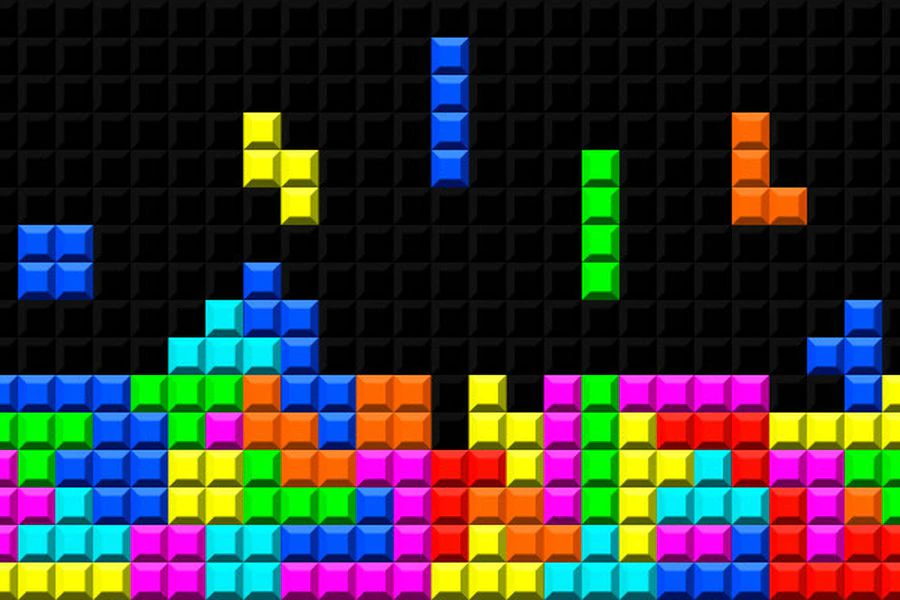

TOP 10 JOGOS RETRÔ
Tetris
Resident Evil 4
Street Fighter II
Pac-Man
Super Mario World
Team Fortress 2
Super Mario 64
Tibia
Final Fantasy VII
Ragnarok Online
Tetris

Tetris (em russo: Тетрис) é um jogo electrônico muito popular,
desenvolvido por Alexey Pajitnov, Dmitry Pavlovsky e Vadim Gerasimov,
e lançado em junho de 1984. Pajitnov e Pavlovsky eram engenheiros
informáticos no Centro de Computadores da Academia Russa das Ciências
e Vadim era um aluno com 16 anos.
Tetris foi um dos primeiros itens de exportação de sucesso da União
Soviética e um dos primeiros a ser visto como um tipo de vício.
Atingiu um público alvo inédito na história dos videogames.
O jogo consiste em empilhar tetraminós que descem a tela de forma que
completem linhas horizontais. Quando uma linha se forma, ela se
desintegra, as camadas superiores descem, e o jogador ganha pontos.
Quando a pilha de peças chega ao topo da tela, a partida se encerra.
Pajitnov percebeu o potencial do jogo por não conseguir parar de jogar
antes mesmo de terminar o programa, bem como dois colegas de trabalho
que ajudaram a finalizar o jogo e todos os colegas do centro de
computação, que haviam recebido cópias em disquetes gravados pelo
próprio Pajitnov. Para não ser acusado de viciar os pesquisadores num
passatempo eletrônico, destruiu todos os discos ao fim do expediente.
Entretanto, o jogo continuou sendo distribuído, de maneira informal,
até chegar a pessoas interessadas em comercializá-lo.
A versão lançada para o Sega-Genesis (Mega Drive) é considerada uma
das mais raras do console.
Construído sobre regras simples, o Tetris se estabeleceu como um dos
grandes videogames iniciais. Em dezembro de 2011, Tetris vendeu 202
milhões de cópias - aproximadamente 70 milhões de unidades físicas e
132 milhões de downloads pagos de jogos para celular - tornando-se uma
das franquias de videogame mais vendidas de todos os tempos. A versão
para Game Boy é um dos jogos mais vendidos de todos os tempos, com
mais de 35 milhões de cópias vendidas. Tetris está disponível em mais
de 65 plataformas, estabelecendo um recorde mundial do Guinness para o
videogame mais adaptado. Tetris está enraizado na cultura popular e
sua popularidade se estende além da esfera dos videogames; as imagens
do jogo influenciaram a arquitetura, a música e o cosplay. O jogo
também foi objeto de várias pesquisas que analisaram sua complexidade
teórica e mostraram seu efeito no cérebro humano após uma sessão, em
particular o efeito Tetris.